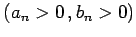
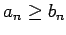
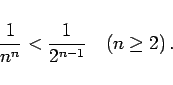
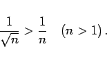

Inhalt Index DeskTop Bronstein

 Unendliche Reihen Reihen mit konstanten Gliedern Konvergenzkriterien für Reihen mit positiven Gliedern
Unendliche Reihen Reihen mit konstanten Gliedern Konvergenzkriterien für Reihen mit positiven Gliedern


Wenn zwei Reihen
nur positive Glieder  besitzen und wenn von einem gewissen n an  ist, dann folgt aus der Konvergenz der Reihe (7.22a) auch die Konvergenz der Reihe (7.22b). Umgekehrt folgt aus der Divergenz der Reihe (7.22b) auch die Divergenz der Reihe (7.22a).
| Beispiel A |
|
Aus dem Vergleich der Glieder der Reihe |
mit denen der geometrischen Reihe (7.15) folgt die Konvergenz der Reihe (7.23a). Von n = 2 an sind die Glieder der Reihe (7.23a) kleiner als die der konvergenten Reihe (7.15):
|  | (7.23b) |
| Beispiel B |
|
Aus dem Vergleich der Glieder der Reihe |
mit denen der harmonischen Reihe (7.16) folgt die Divergenz der Reihe (7.24a). Von n > 1 an sind die Glieder der Reihe (7.24a) größer als die der divergenten Reihe (7.16):
|  | (7.24b) |